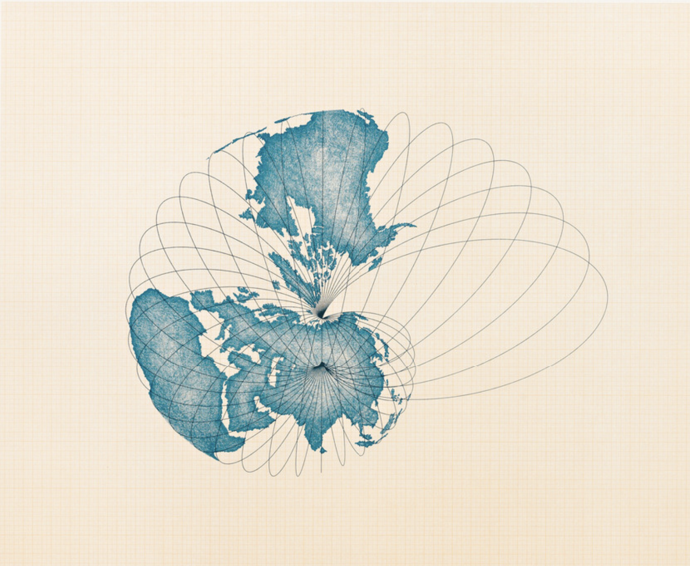
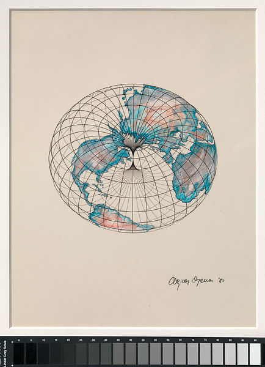
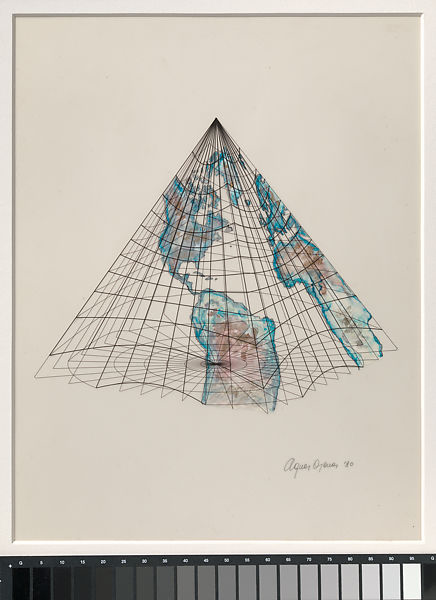
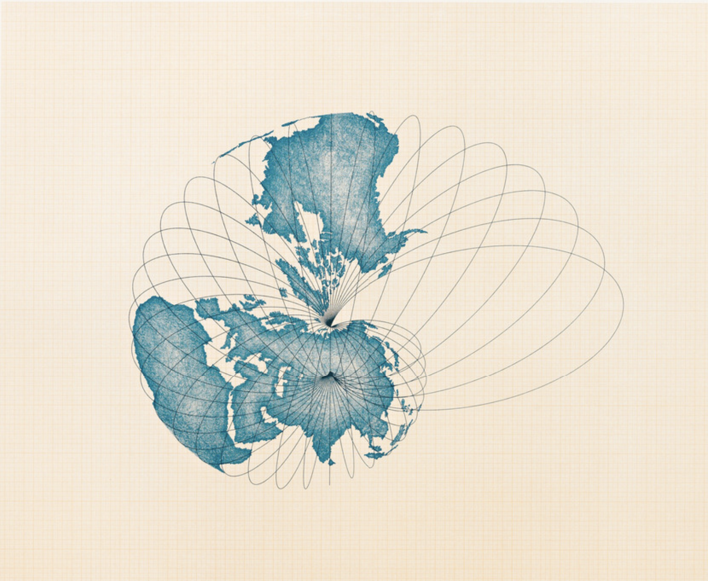
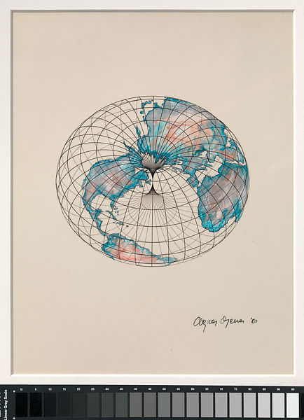
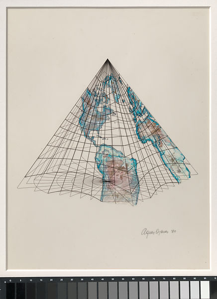

A pioneering artist who emerged in the 1960s, Agnes Denes works in a wide range of media, producing art that crosses numerous movements, most notably Land Art. Denes draws inspiration from a heady range of disciplines, including philosophy, mathematics, poetry, and science, and her concerns for the environment and land reclamation are among the driving forces of her work. She is best known for a powerful environmental intervention called Wheatfield – A Confrontation (1982). For this project, Denes planted a field of golden wheat on a two-acre vacant lot situated between Wall Street and the former World Trade Center in lower Manhattan. Over the course of four months her crop grew to maturity, yielding more than 1,000 pounds of wheat, which was harvested at the end of the project and disseminated around the world. In 2015, Interview Magazine asked Agnes Denes whether her concerns about the environment had changed since the 1960s and ’70s. “No,” she responded. “It’s just that some of the things I talked about 40 years ago have become reality.” One of the first pioneers of environmental art, Denes has been warning us about our unsustainable relationship with the planet for over half a century. A recent retrospective at The Shed felt like long-overdue recognition for the artist, who is now 89. A foil to her male counterparts within the early land art movement, Denes was always more invested in how her work could minimize humanity’s ecological footprint. The greatest exemplar of this is undoubtedly her 1982 pieceWheatfield—A Confrontation. To realize this work, Denes cleared two acres of land in Lower Manhattan, filled it with 200 truckloads of soil, and sowed a wheat field by hand. As the crop grew, so did an arresting new landscape; amber waves of pastoral grain contrasted against the stark glass labyrinth of the Financial District on one side and the Statue of Liberty on the other. Now iconic, Wheatfield has sadly only grown more prescient with time. After four grueling months of maintenance (Denes recalls the piece nearly killing her), the wheat was reaped and harvested. The crop yielded over a thousand pounds of grain, which traveled to 28 cities around the world in an exhibition titled “The International Art Show for the End of World Hunger.” Audiences were encouraged to take seeds from the show and plant them. Denes’s miraculous ability to synthesize science, philosophy, linguistics, ecology, and psychology into a cohesive whole is a through line in all of her work. Rice/Tree/Burial, a piece first realized in New York’s Sullivan County in 1968, is a three-step ritual Denes developed as an exercise in what she termed “eco-logic.” It involves planting rice to represent life, chaining trees for interference and decay, and burying her poetry to symbolize concept and creation. Meanwhile, her monumental Tree Mountain – A Living Time Capsule (1992–96) in Western Finland is a literal forest. Dedicated by the Finnish government in 1996, the work is legally protected for the next 400 years.